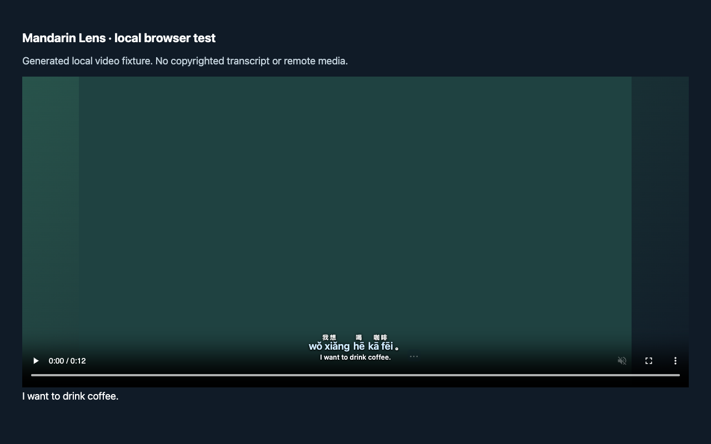

VERSION 1.3 · FREE & OPEN SOURCE
A little Mandarin,
every day.
Chinese, clear pinyin, and English captions.
Make the next video a chance to learn.
Desktop Chrome · Local processing · No account
ZIP installation uses Developer mode. No store fee.

LESS IN THE WAY
Your video.
Your subtitle style.
Keep pronunciation easy to read, dial down the background, and move captions where they work for you.
- Separate Chinese, pinyin and English sizes
- Compact, Comfortable and Large presets
- Opacity, fonts, blur, spacing and position
- Small word popovers. Controls only when you need them.
READY IN A FEW STEPS
Download. Extract. Start learning.
- Keep the folder. Download the ZIP and extract it somewhere permanent.
- Load it in Chrome. Open
chrome://extensions, turn on Developer mode, choose Load unpacked, and select the extracted folder containingmanifest.json. - Open a captioned video. Turn CC on. Click Mandarin Lens, then Start learning. Click Start learning on the video to authorize Chrome's local language pack.
Send the same ZIP and these steps to a friend. Updates are manual: replace the extracted files and Reload. Back up your words before updating.
Local translation needs compatible desktop Chrome hardware and a language pack, downloaded separately by Chrome. Chrome 138+ is the API baseline; availability varies. No mobile support, audio transcription or Google store review. Videos without accessible captions need an SRT/VTT file.
STAYS WITH YOU
No account. No caption uploads.
Preferences, saved words and prepared captions stay in your browser profile. There are no analytics or ads. Chrome manages its own model downloads; language packs take additional disk space.